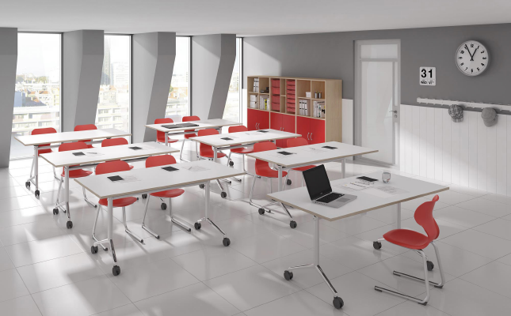

Un local,une webcam

- Prise de contact avec l'école
- Démarche administrative
- Installation d'une webcam dans le local
TakeÖff permet à vos enfants de ne pas pénalisé leur apprentisage malgré des longues durées d'absence.
Nous mettons directement vos enfants en connection avec leur école pour qu'ils ne perdent pas une seconde ! Tout cela gratuitement
Un homme n'est jamais si grand que lorsqu'il est à genoux pour aider un enfant.
source